Simulating Cobalt Strike Beacon Activity
In this quick blogpost, I will share the steps that I completed to simulate Cobalt Strike beacon activity using APTSimulator in a Windows 10 virtual machine.
Pre-requisites
In order to complete the steps of this blogpost, you need to clone the APTSimulator project in your computer.
a) Using Git Clone
Run the following commands to clone the repository in your preferred directory.
git clone https://github.com/NextronSystems/APTSimulator.git
b) Downloading the GitHub Repository in Zip Format
Use the Download Zip option from the GitHub website to download the repository files in your preferred directory.
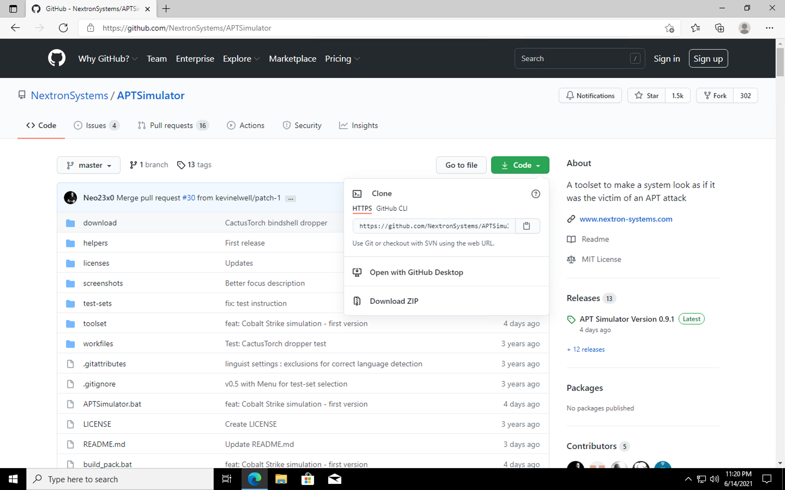
If the Windows Defender antivirus application is on, it might block the download process.
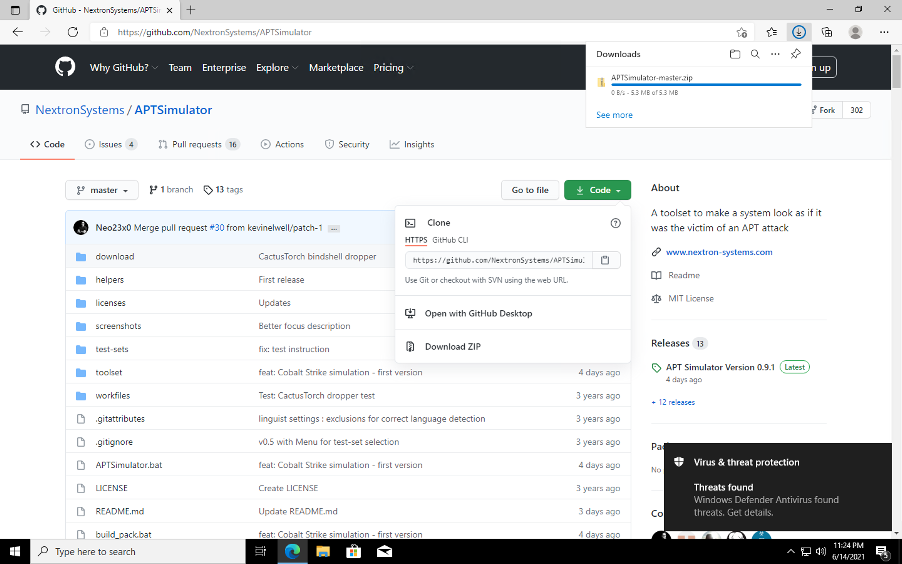
Here are some examples of files categorized as threats by Windows Defender
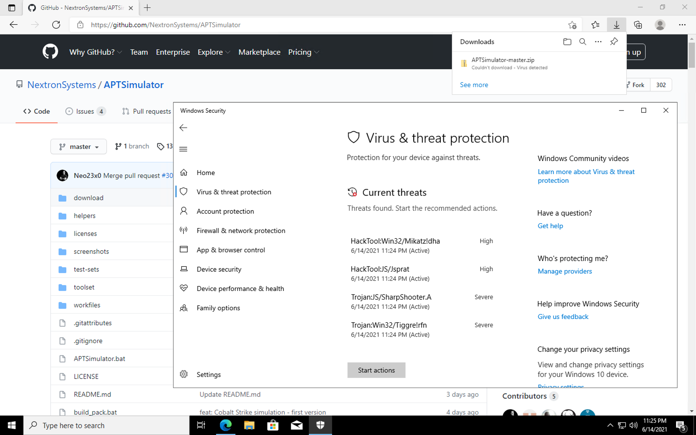
After turning the Windows Defender antivirus application off, you should be able to download the APTSimulator zip folder.
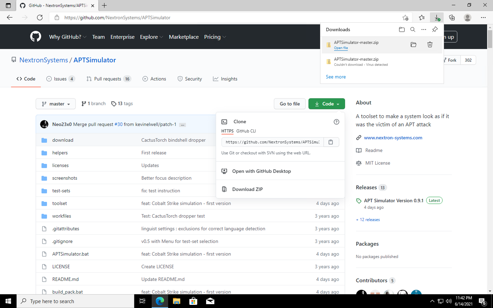
After downloading the zip folder, you will need to extract the APTSimulator files.
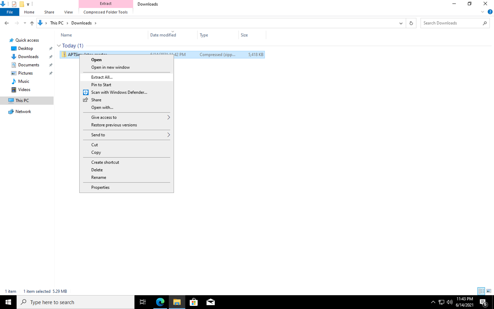
Select a preferred destination for the APTSimulator files. For the purpose of this blogpost, I will use the Documents folder.
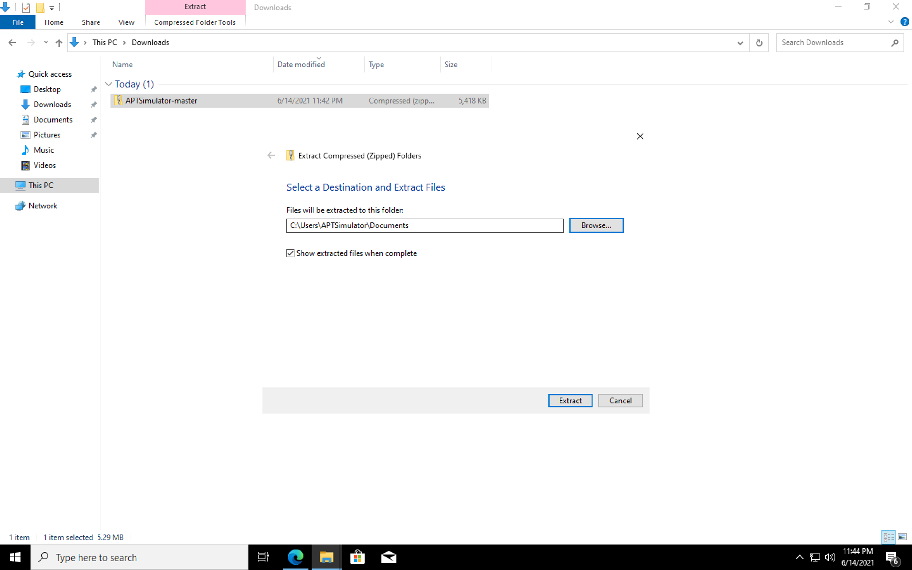
You should be able to see the APTSimulator files now.
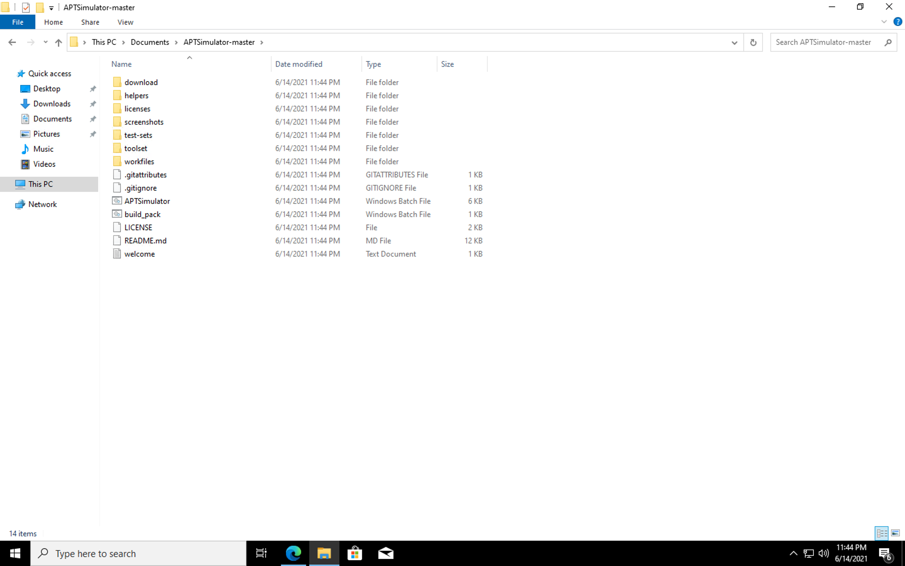
Simulating Cobalt Strike Beaconing
1) Extracting Tools and Files
Open the Command Prompt (CMD) with Administrator rights.
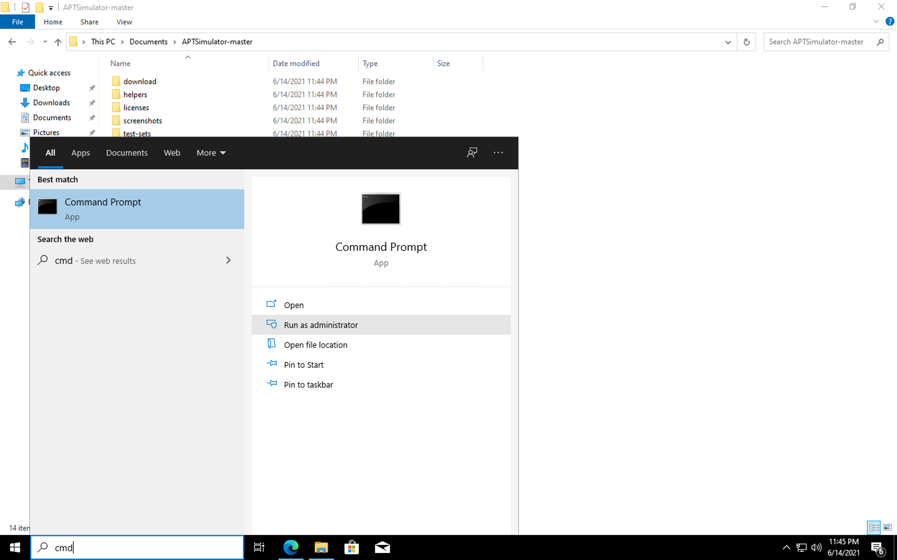
Execute the following commands to change your current directory to the APTSimulator-master folder and run the build_pack.bat file.
cd Documents/APTSimulator-master
build_pack.bat
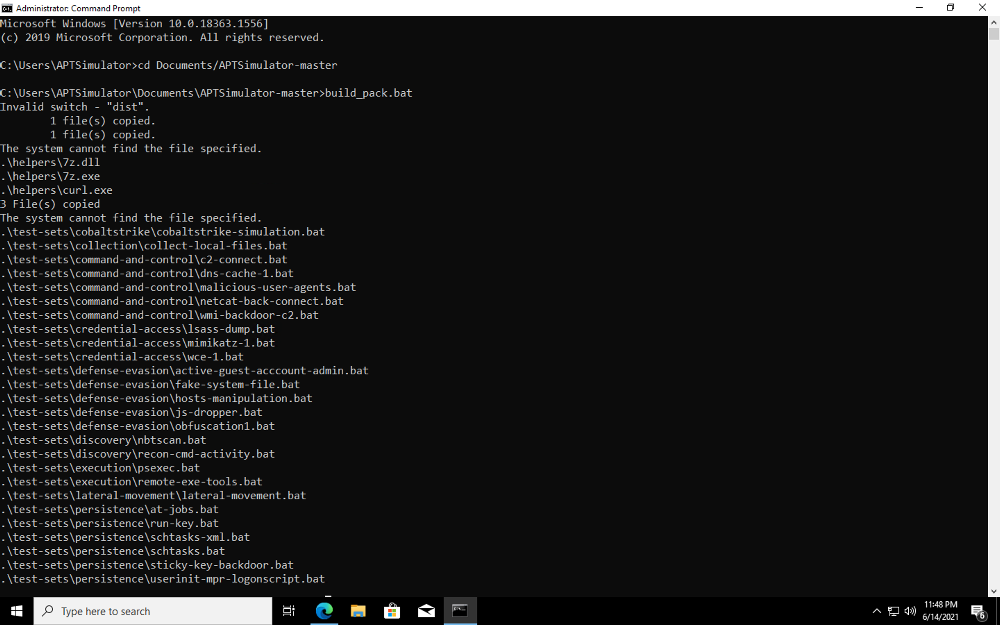
2) Executing APTSimulator
In the same Command Prompt (CMD) window with Administrator rights, use the following commands to execute the APTSimulator.bat file.
APTSimulator.bat
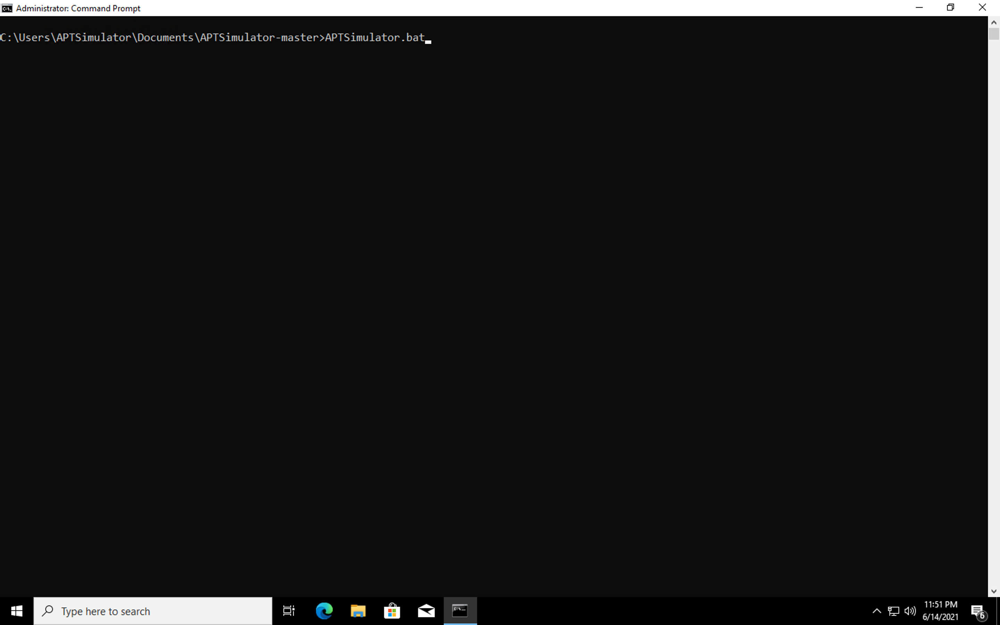
After executing the .bat file, you will get a warning message that you need to answer with Y (Yes).
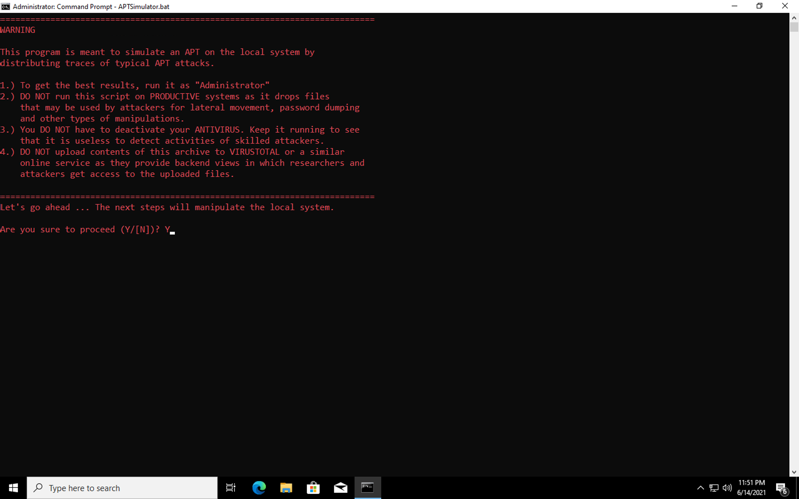
After answering Yes to the warning message, you will see all the options provided by APTSimulator. For the purpose of this blogpost, I will use the CobaltStrike Beacon Simulation option that is represented by the letter C.
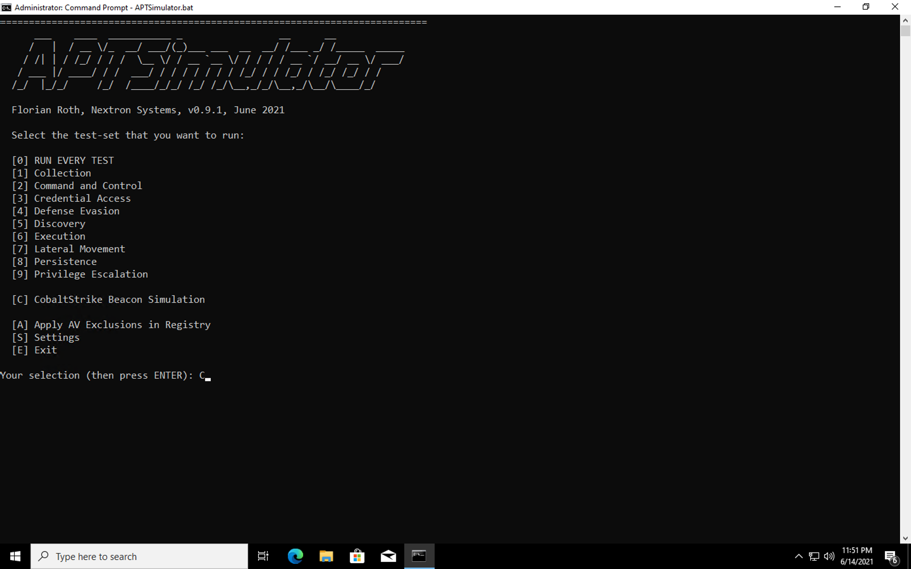
3) Simulating Cobalt Strike Beaconing
Running option C will allow you to start the simulation process.
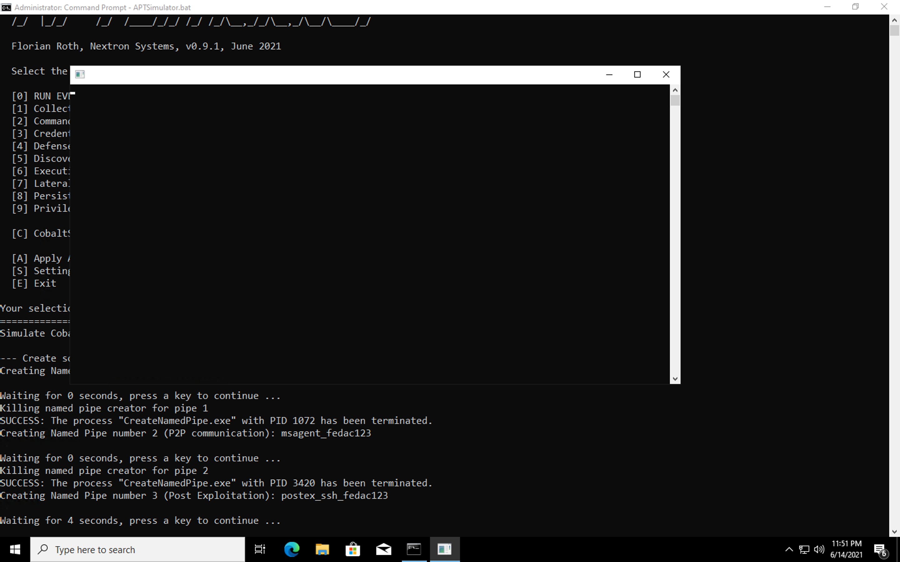
After the creation of named pipes and services, you will see HTTP beaconing activity (http://10.0.2.15/pixel.gif).
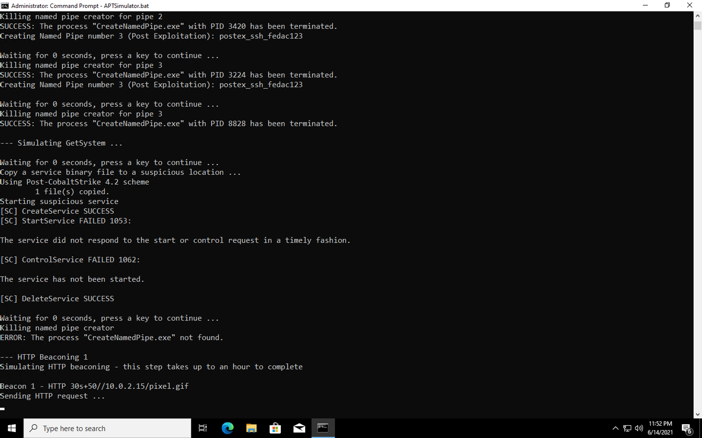
Do you want to analyze sample data for this behavior?
I have created a pre-recorded Mordor dataset with Sysmon, Security, and System events that were triggered when simulating Cobalt Strike Beacon Activity using APTSimulator.
References
- https://github.com/NextronSystems/APTSimulator
- https://twitter.com/cyb3rops/status/1403253268051107840
- https://twitter.com/OTR_Community/status/1403551913459728387
Subscribe to Open Threat Research Blog
Get the latest posts delivered right to your inbox